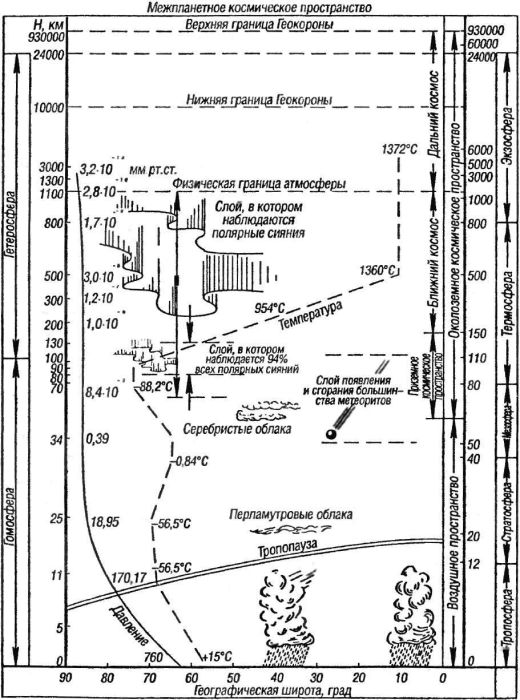

К вопросу о границах космоса
Прежде чем начать разговор об альтернативных и перспективных космических проектах, необходимо разобраться, что же именно мы будем понимать под «космосом» и «космическим пространством». Дело в том, что даже сегодня вопрос о границе, после которой кончается атмосфера и начинается собственно космос, остается довольно запутанным и никто не может дать на него однозначного ответа
Например, если вы откроете энциклопедию «Космонавтика» 1985 года издания, то в статье «Космическое пространство» обнаружите совершенно невразумительное определение: «Космическое пространство — это пространство, простирающееся за пределами земной атмосферы». Сразу же возникает вопрос: а как далеко простирается земная атмосфера?
Чуть ниже авторы энциклопедии глубокомысленно сообщают, что «… в международном космическом праве нет договорной нормы, устанавливающей границу между воздушным пространством и космическим пространством». При этом утверждается: «Преобладающей является точка зрения, согласно которой такая граница должна быть установлена на высоте минимальных перигеев искусственных спутников Земли (100 км над поверхностью Земли)».
Однако существуют и другие точки зрения, отличные от «преобладающей».
Свое определение дают, например, врачи. Они ввели даже специальный термин — «пространственно-эквивалентная высота». В численном выражении она составляет около 18 километров. Причина выбора такой сравнительно малой величины, по мнению медиков, заключается в следующем Для большинства людей пребывание на высоте 3000 метров не требует никаких специальных мер предосторожности. На высоте 7600 метров человек еще может дышать при условии, что он достаточно натренирован и привык к низкому давлению. Человек, внезапно попавший в условия, соответствующие высоте 7600 метров над уровнем моря, теряет сознание через 3–4 минуты (этот отрезок времени назван «временем полезного сознания»). При увеличении высоты еще на 1500 метров «время полезного сознания» сокращается до одной минуты. На высоте 15 километров оно колеблется между 10 и 18 секундами в зависимости от предварительной тренировки и опыта. На этих высотах к опасности потери сознания добавляется еще один весьма серьезный фактор. Известно, что точка кипения любой жидкости падает по мере снижения атмосферного давления. На высоте 18 километров это давление понижается на такую величину, что жидкость, содержащаяся в теле человека (кровь, лимфа и т. д.), начинает закипать при нормальной температуре тела — 36,6 °C. Таким образом, с медицинской точки зрения, космос начинается там, где прекращается всякая жизнедеятельность.
Другого мнения о границах космического пространства придерживаются авиаторы. На высоте 18 километров еще могут летать самолеты с воздушно-реактивными двигателями. С точки зрения авиационного инженера, космическое пространство начинается либо на высоте, где перестают работать воздушно-реактивные двигатели (на 6000–9000 метров выше медицинской «пространственно-эквивалентной высоты»), либо на высоте, на которой даже при очень высоких скоростях полета крылья уже не создают достаточной подъемной силы, — эта высота равна примерно 40 километрам и очерчена верхней границей стратосферы (и нижней границей мезосферы). С другой стороны, выше 65 километров плотность воздуха столь мала, что для удержания любого летательного аппарата на заданной высоте необходимо выполнять полет со скоростью, близкой к первой космической, а значит, этот аппарат по факту можно считать «космическим объектом».
Примечательно, что для физика даже эта высота не является границей космоса. Настоящий физик только здесь и начинает интересоваться атмосферой, а границу переносит на высоту в 200 километров

Разумеется, с запуском первого искусственного спутника Земли возникла острая нужда в строгом разграничении воздушного и космического пространств, так как вывод на околоземную орбиту различного рода объектов затрагивает национальные интересы множества государств, над территорией которых упомянутые объекты пролетают. Состоялась не одна международная конференция, посвященная выработке положений «международного космического права», но и по сей день при решении спорных вопросов эксперты ориентируются на «преобладающую» точку зрения. Так, согласно решению Международной авиационной федерации (ФАИ), полет принято считать космическим, если максимальная достигнутая высота превысила 100 километров над уровнем моря.
Однако мы будем придерживаться иной точки зрения. Дело в том, что большинство историков космонавтики (а настоящую книгу без преувеличения можно назвать работой по истории космонавтики) связывают определение «космический» не столько с высотой, сколько с назначением. Грубо говоря, если тот или иной аппарат проектировался и создавался для полета в космическое пространство, то вне зависимости от того, способен он был достичь хотя бы «пространственно-эквивалентной высоты» или нет, мы вправе называть его космическим, поскольку его создание является этапом, из которых и складывается собственно история космонавтики.
По этому критерию мы можем называть космическими и сохранившийся в эскизе проект «воздухоплавательного прибора» Николая Кибальчича, и первую ракету Роберта Годдарда, которая достигла невеликой высоты в 12,5 метра, и гиперзвуковые дисколеты Третьего рейха, так и не увидевшие неба. В то же самое время и при тех же условиях нельзя назвать космическими полеты и аппараты аэронавтов, или ночной бомбардировщик «Ф-117», или ракеты зенитного комплекса «С-300».
Для нас в рамках этой книги важнее всего Идея — та самая, благодаря которой XX век стал веком покорения космоса. А уж с проблемой высот и границ пусть разбираются другие.